STILLNESS · 적막
그는 누구를 지켰을까
밤의 소금길 역참 · 광기의 다라이시
철창은 열렸고, 소금길에는 맨발 자국이 남았습니다.
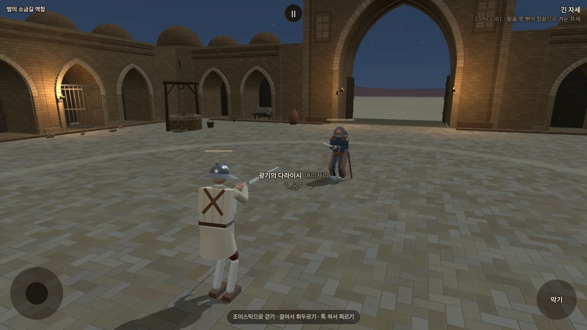
호위였을까, 감시였을까
기본 외형을 먼저 보강했습니다. 목 보완·은발 세 시안 보기 · 얼터에는 아직 반영하지 않았습니다.
먹청색과 탁한 동색의 옷. 왼손목에는 끊어진 족쇄 하나가 남아 있습니다. 누군가를 풀어 준 흔적인지, 스스로 벗어난 흔적인지는 알 수 없습니다.

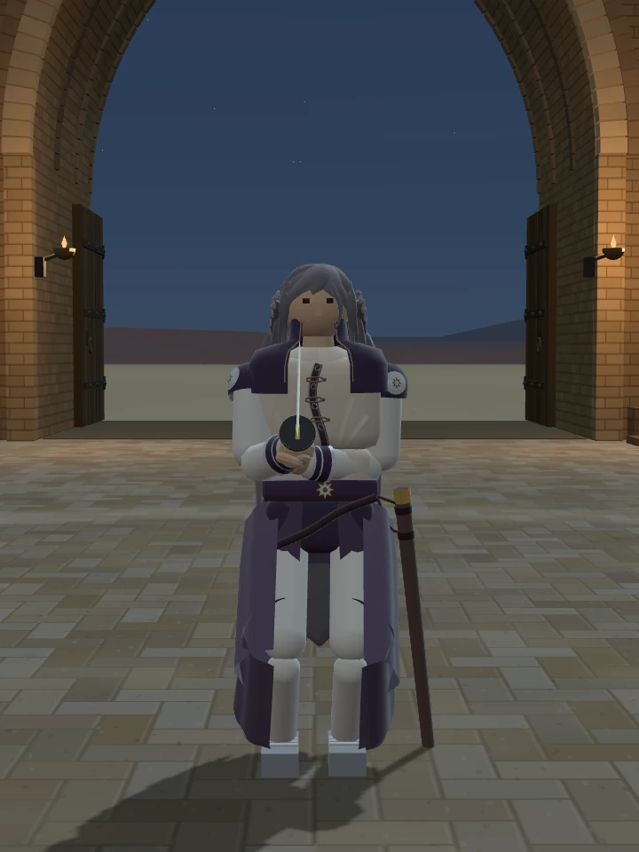

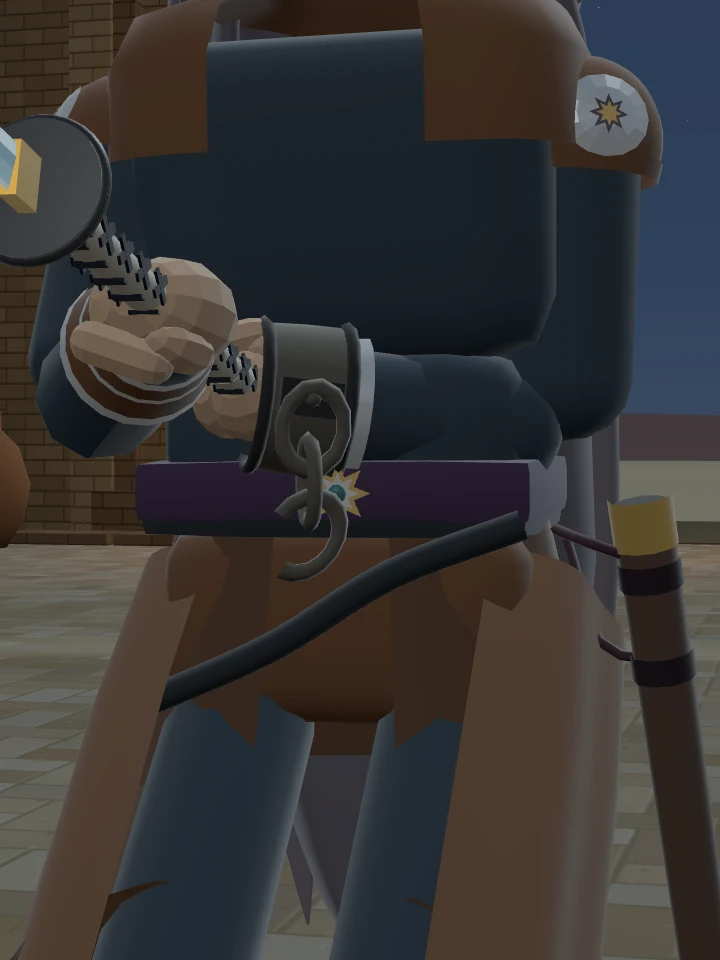
얼굴과 뒷모습 보기

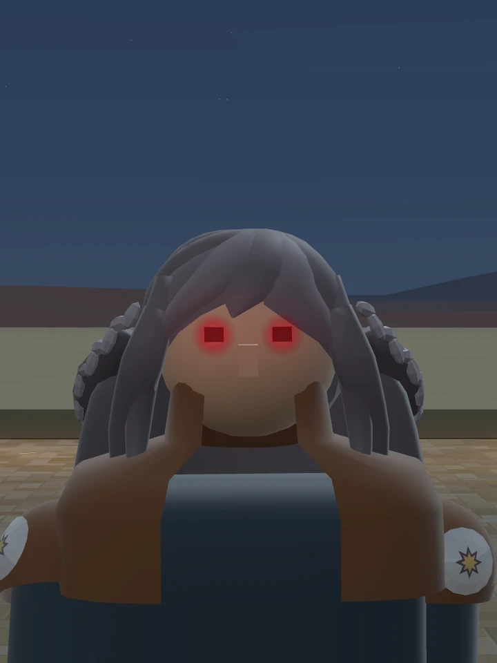

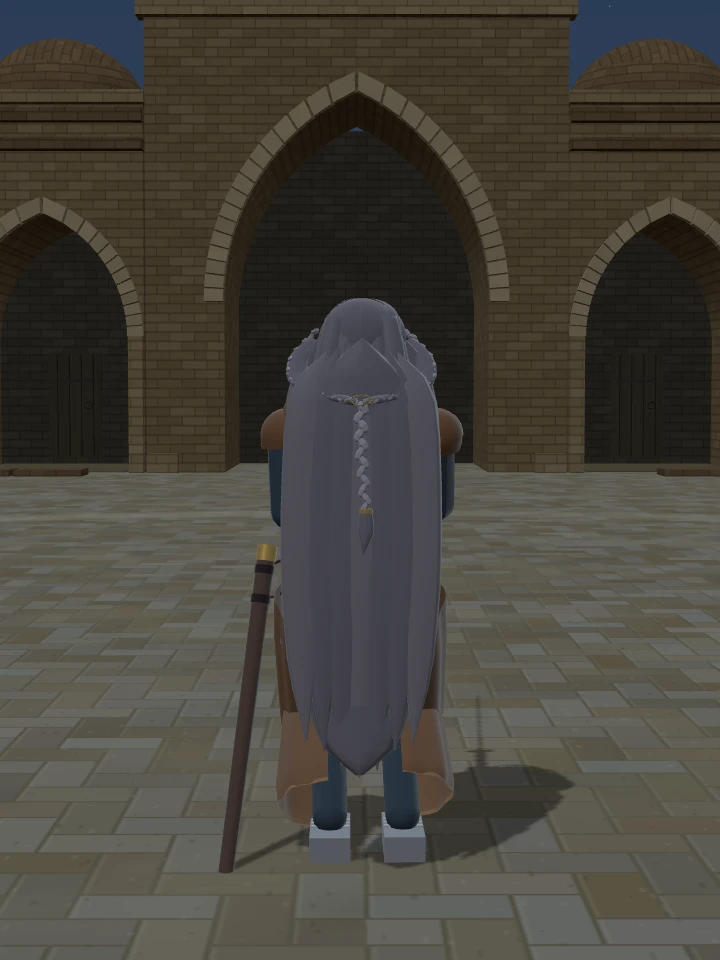
이전 복식 복귀 기록 보기
우화가 복귀시킨 원래 복식을 반영했습니다. 긴 장식 자락으로 만들었던 이전 시안과 같은 구도에서 비교할 수 있습니다.


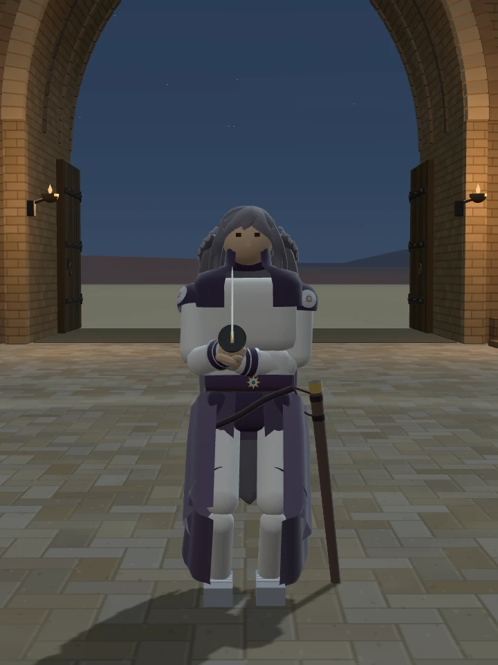

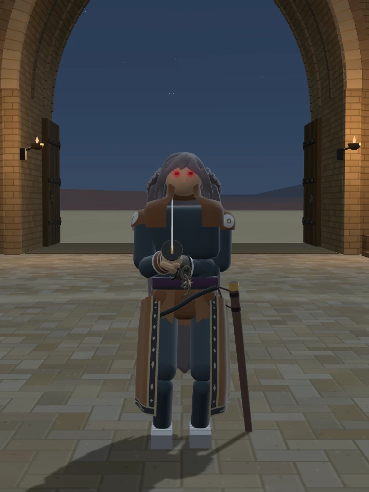
원래 무기·힘·체력·AI·전투 스타일을 유지한 외형 시안입니다. 족쇄에 방어력이나 구속 효과는 없습니다.
열린 철창
호송대가 머물던 아치방의 철창이 안쪽에서 열렸습니다. 빈 깔개, 끊어진 잠금 사슬, 아직 타고 있는 작은 기름등만 남아 있습니다.
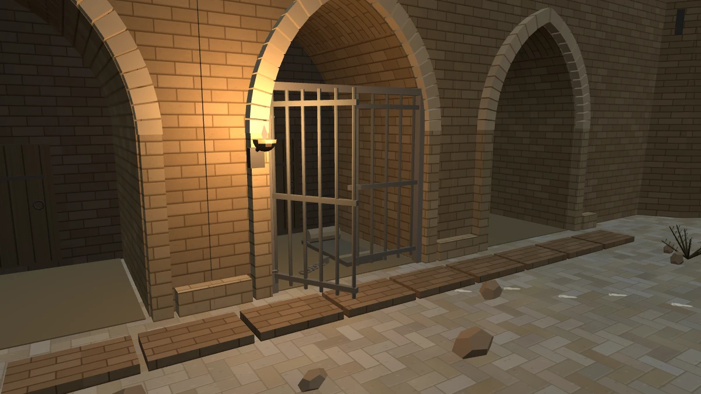
소금길에서 끊긴 흔적
맨발 자국이 우물을 돌아 문루 밖으로 이어집니다. 길 끝에서는 바닥을 훑는 소금 먼지가 마지막 흔적을 덮습니다. 그가 지키던 사람이 나간 것일까요.
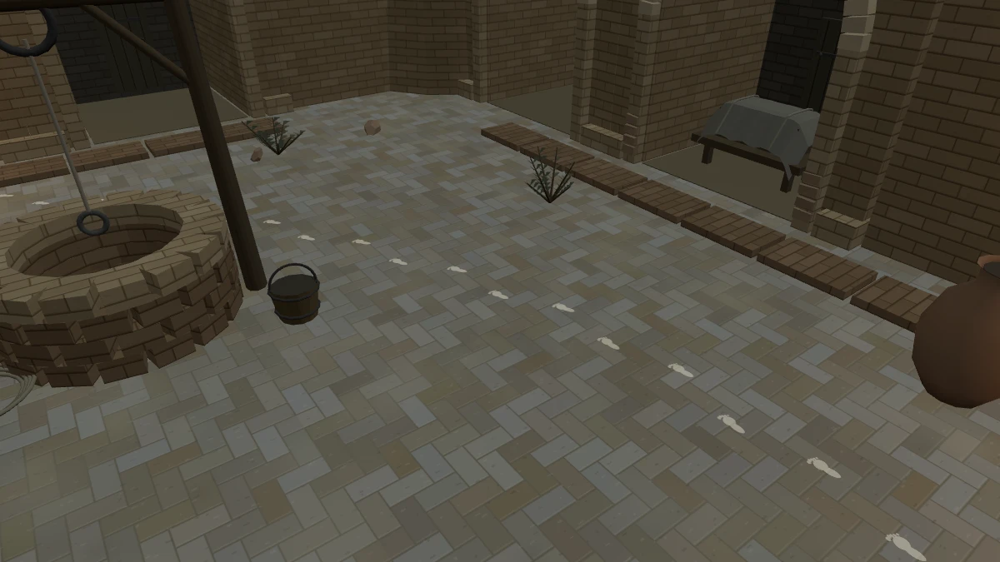
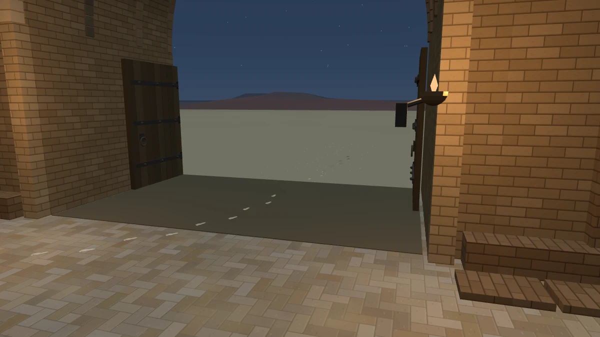
사막 바람과 기존 호송 고리의 작은 울림을 남겼습니다. 세 기름등과 달빛이 결투장과 길의 윤곽을 비춥니다.
낮과 밤의 역참 비교

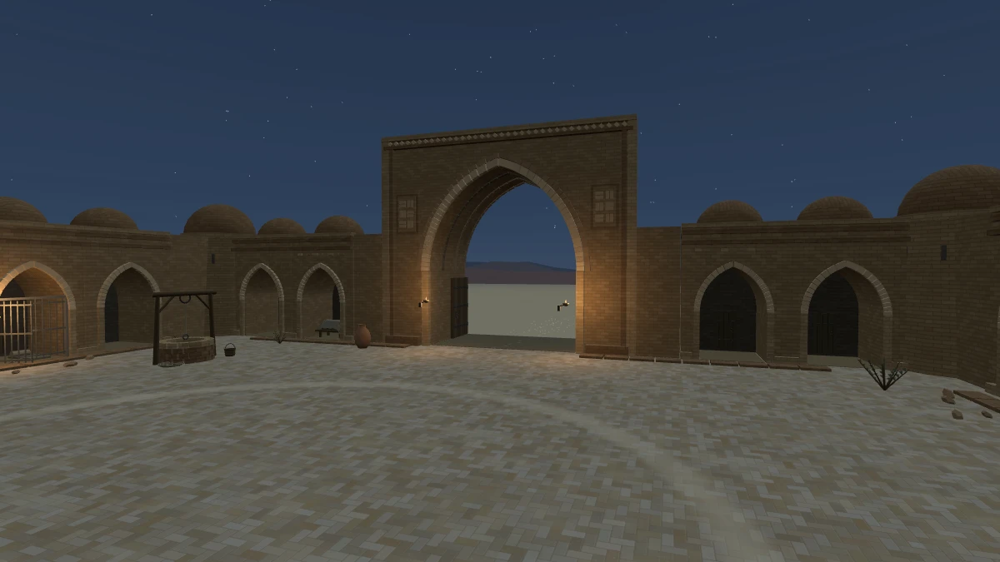